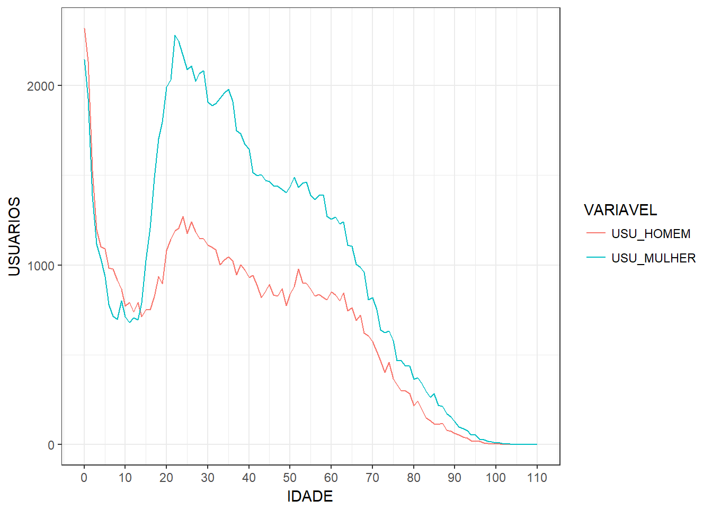
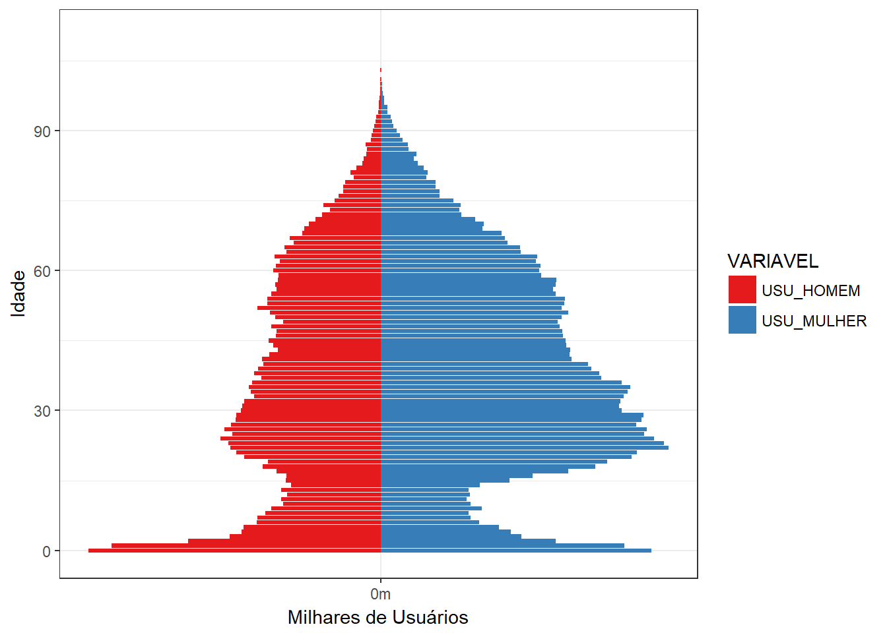

knitr::opts_chunk$set(echo = T)
options(scipen=100)
options(digits=2)library(readxl)
library(tidyverse)
library(reshape2)
library(plotly)
library(plyr)
library(readr)consultas <- read_csv("C:/Users/hp1806/Google Drive/RStudio/consulta_por_idade_aps/consultas_idade_unidade.csv")
pop_fpolis <- read_delim("C:/Users/hp1806/Google Drive/RStudio/consulta_por_idade_aps/pop_fpolis.csv",
";", escape_double = FALSE, trim_ws = TRUE)agregado <- consultas[, c(2,4:8)]
agregado <- group_by(agregado, UNIDADE,IDADE) %>%
summarise_all(funs(sum))
idade <- agregado[,-1]
idade <- aggregate(idade[,-1], by = idade[,1], FUN = sum)
idade$FAIXA <- NA
idade$FAIXA[which(idade$IDADE <= 4)] <- "0 a 4 anos"
idade$FAIXA[which(idade$IDADE >= 5 & idade$IDADE <= 9)] <- "05 a 9 anos"
idade$FAIXA[which(idade$IDADE >= 10 & idade$IDADE <= 14)] <- "10 a 14 anos"
idade$FAIXA[which(idade$IDADE >= 15 & idade$IDADE <= 19)] <- "15 a 19 anos"
idade$FAIXA[which(idade$IDADE >= 20 & idade$IDADE <= 24)] <- "20 a 24 anos"
idade$FAIXA[which(idade$IDADE >= 25 & idade$IDADE <= 29)] <- "25 a 29 anos"
idade$FAIXA[which(idade$IDADE >= 30 & idade$IDADE <= 34)] <- "30 a 34 anos"
idade$FAIXA[which(idade$IDADE >= 35 & idade$IDADE <= 39)] <- "35 a 39 anos"
idade$FAIXA[which(idade$IDADE >= 40 & idade$IDADE <= 44)] <- "40 a 44 anos"
idade$FAIXA[which(idade$IDADE >= 45 & idade$IDADE <= 49)] <- "45 a 49 anos"
idade$FAIXA[which(idade$IDADE >= 50 & idade$IDADE <= 54)] <- "50 a 54 anos"
idade$FAIXA[which(idade$IDADE >= 55 & idade$IDADE <= 59)] <- "55 a 59 anos"
idade$FAIXA[which(idade$IDADE >= 60 & idade$IDADE <= 64)] <- "60 a 64 anos"
idade$FAIXA[which(idade$IDADE >= 65 & idade$IDADE <= 69)] <- "65 a 69 anos"
idade$FAIXA[which(idade$IDADE >= 70 & idade$IDADE <= 74)] <- "70 a 74 anos"
idade$FAIXA[which(idade$IDADE >= 75 & idade$IDADE <= 79)] <- "75 a 79 anos"
idade$FAIXA[which(idade$IDADE >= 80)] <- "80 anos ou mais"
idade_faixa <- idade[,-1]
idade_faixa$FAIXA <- as.factor(idade_faixa$FAIXA)
idade_faixa <- aggregate(idade_faixa[,-5], by = list(idade_faixa$FAIXA), FUN = sum)
names(idade_faixa)[1] <- "FAIXA"Em 2017 XXXX pessoas utilizaram a atenção primária de Florianópolis, com uma maior utilização por pessoas do sexo feminino em praticamente todas as idades, com exceção de crianças de 0-4 anos e idosos, onde a utilização entre os sexos é semelhante.
Figura-1: Distribuição etária dos usuários da atenção primária de Florianópolis
idade_usuario <- idade[,c(1,2,3)]
idade_usuario <- melt(idade_usuario, id = c("IDADE"))
names(idade_usuario)<- c("IDADE", "VARIAVEL", "USUARIOS")
ggplot(idade_usuario, aes(x=IDADE, y=USUARIOS, col = VARIAVEL))+
geom_line()+
scale_x_continuous(breaks = seq(0,120,10))+
scale_y_continuous(breaks = seq(0,17000,1000))+
theme_bw()
Figura-2: Pirâmide etária dos usuários da atenção primária de Florianópolis
idade_usuario1 <- idade[,c(1,2,3)]
idade_usuario1$USU_HOMEM <- -1*idade_usuario1$USU_HOMEM
idade_usuario1 <- melt(idade_usuario1, id = c("IDADE"))
names(idade_usuario1)<- c("IDADE", "VARIAVEL", "USUARIOS")
idade_usuario1$VARIAVEL <- as.character(idade_usuario$VARIAVEL)
ggplot(idade_usuario1, aes(x = IDADE, y = USUARIOS, fill = VARIAVEL)) +
geom_bar(subset = .(VARIAVEL == "USU_HOMEM"), stat = "identity") +
geom_bar(subset = .(VARIAVEL == "USU_MULHER"), stat = "identity") +
scale_y_continuous(breaks = seq(-20000, 20000, 5000),
labels = paste0(as.character(c(seq(20, 0, -5), seq(5, 20, 5))), "m")) +
coord_flip() +
scale_fill_brewer(palette = "Set1") +
theme_bw()+
ylab("Milhares de Usuários")+
xlab("Idade")
Copyright © 2016 Skynet, Inc. All rights reserved.